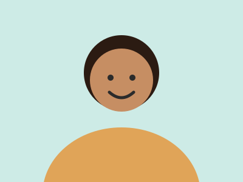
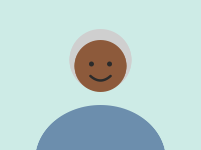

Memórias
Rostos conhecidos, com nome e parentesco, para ajudar a lembrar de quem a gente ama.
Álbum da família


Como adicionar uma foto?
Passo a passo para o cuidador
Coloque a foto na pasta de imagens do site, com um nome simples, e troque o endereço da imagem nesta página. Escreva embaixo o nome e o parentesco.